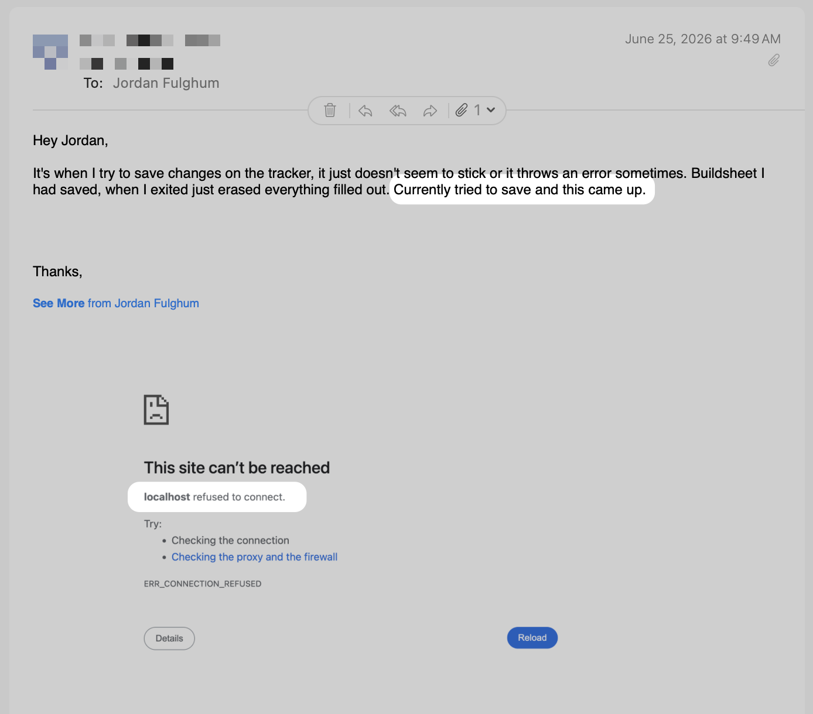
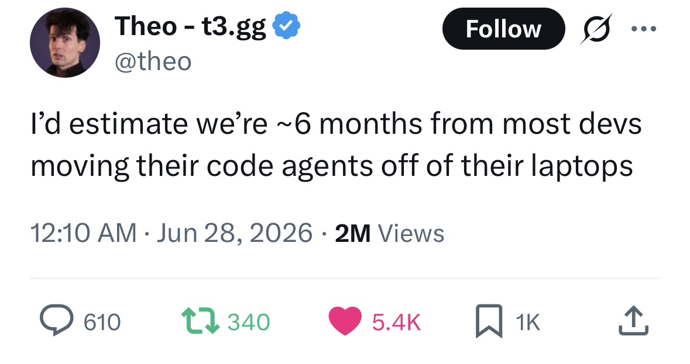

by Jordan Fulghum, June 2026
Why localhost is becoming the wrong default for agentic software development.
These days, as a Highly Paid Software Engineer, I spend a good amount of time explaining to people that localhost is not the internet.

Explaining the concept of local vs. cloud to a non-technical person who has vibecoded something using coding agents is a surprisingly difficult task.
Me: “You know how you have documents locally, but you can also share them with others for collaboration on Google Drive?”
Non-technical vibecodey person: “You mean, like Google Docs?”
Me: “Er, ok. You know how you have MP3 files locally but can also stream on Spotify?”
Non-technical vibecodey person: “MP3 what now?”
I am getting emails like the above every day. Someone closes the terminal and “the app disappears.” Or they create a new record locally and are confused when they do not see the same updates to the production version.
As software engineers, we understand the concept of environments and take “local” for granted, because, after all, an application is just a set of files, and our computer is the fastest and, at least up until recently, the easiest way to manage these files. This is normal, but I am learning that for everyone else, from first principles, it is extremely unintuitive.
My suspicion is that this is the next abstraction to break.
Today, coding agents run in a terminal, or increasingly more commonly a desktop app. The model infers remotely but the agent runs commands through your shell, inherits your local setup, your installed dependencies, your path issues, your broken Postgres install, your secrets, your ports, and, of course, your laptop going to sleep.
That makes sense as a bridge from the old world to the new one. The first users were developers. Developers already had local projects. So the agents met us where we were. But it is an increasingly strange default for where everything is going.
We are used to all this crap: clone the repo. Install the right language version. Install dependencies. Set up Postgres. Maybe Redis. Copy .env.example into .env. Ask someone for credentials. Run migrations. Start the server. No, the other one. Well, both. Open the browser. Check the port. Ok. Commit. Push. Ah crap, merge conflict. Ah crap, CI broke. Deploy to staging. Send to QA. Promote to production.
This workflow is annoying but it is legible if you grew up inside it. Eventually you stop seeing how much conceptual weight it carries.
We have seen hints of this in the past few years: GitHub Codespaces put the development environment in the cloud. VS Code Remote-SSH made the local editor feel like a viewport into another machine. Replit and others made the app feel like it was already somewhere. These provided a nice shortcut where the devs did not start by assembling a machine, but rather by just building.
These products pointed in the same direction, but for whatever reason they have not quite become the default for professional web dev. Local was too entrenched. Developers liked their machines. Tooling worked well enough and perhaps, at least, the pain was familiar.
The important thing about coding agents is not just that they make developers faster. It is that many of the people building software now do not think of themselves as developers at all. They describe an internal tool, a little CRM, a dashboard, a booking flow, a calculator, a landing page, a workflow app. The agent builds something. It appears in a browser. To them, the app exists. Why would it be fake? What do you mean you cannot see it? It works on my machine!
They simply do not have a mental model for a dev server. They do not know what a port is. They do not have to learn why SQLite was fine locally but Postgres is different in production, or why the frontend is running but the backend is not, or why the environment variable exists on their laptop but not in Vercel.
In fact, the frontier models already live in the cloud. The agent is reaching down from the GPU cluster into your laptop, reading files, running commands, editing code, and trying to operate a little machine it does not fully control.
The cleaner version is obvious. The agent should have its own cloud workspace: a repo, a runtime, a database, a browser, logs, tests, secrets, permissions, deployment, and observability. All in one place.
In that model, the agent does not have to debug your local environment. It does not have to ask whether you installed the right version of Node. It does not have to infer why your machine is different from production. Even if the agent is already quite adept at navigating these hurdles, in the future it gets a known environment and can work inside it right away, continuously, deterministically.
It can keep working when your laptop is closed. It can run multiple attempts in parallel. It can own a clean sandbox for every branch or task. It can see the preview, the logs, the database, the deploy, and the permissions model without asking the user to wire them together. It can make a change, run the app, inspect the result, fix the error, and hand you a live URL.
This also, of course, changes what deployment means. Right now deployment still feels like a separate ritual, building locally, pushing code, running CI, configuring variables, deploying to some host, checking logs, fixing the thing that only broke after deployment, and trying again.
In a cloud-native agent workflow, deployment feels more like changing visibility of a Google Doc. Every app is already running somewhere. Every branch or task or even state has a URL. The database exists from the start. Auth exists from the start. Logs exist from the start. Rollbacks exist from the start. Production is the same object with different permissions, data, scale, etc.
I think that is a much easier concept for normal people to understand. Private preview, shared preview, internal app, external/public app. The underlying machinery still exists, but the builder experiences it as permissions and product choices, not infrastructure hassle.
The next version should feel more like authorizing an app on your phone. Connect Stripe. Connect Gmail or whatever. Allow this agent to read logs. Allow this app to send email. Allow public access. Whoops, do not grant that scope. Underneath, there are still secrets, tokens, scopes, roles, variables, build steps, and everything. But the interface changes from configuration to permission.
Right now we are in an uncanny valley. A nontechnical person can build something shockingly real with a few prompts, but then immediately fall into concepts they were never trying to learn: localhost, Git, branches, environment variables, migrations, build failures, deploy targets, production logs, and, somehow, always CORS.
It is magical and broken at the same time. The app can appear in minutes, but making it durable still requires a broken-down, nihilistic software engineer to explain the last twenty years of web development. That gap is the product opportunity and I am sure the big labs are working on it.

I agree with Theo. My bet is that sometime in the next six to twelve months, the center of gravity for web application development, which today is mostly synonymous with agentic coding, moves meaningfully away from local-first. A new app will start as a cloud workspace. The agent will live there. The database will be there. The preview will be there. The logs will be there. The “deploy path,” to the extent that it is even still a known concept, will be there.
For twenty years, we taught everyone that the web is live, instant, collaborative, and everywhere. Then we told anyone who wanted to build for it to begin inside a private universe on their laptop that disappears when they close their machine.
The agent should live where the software lives and software should be born where it can be used.
Follow me on Twitter for more.